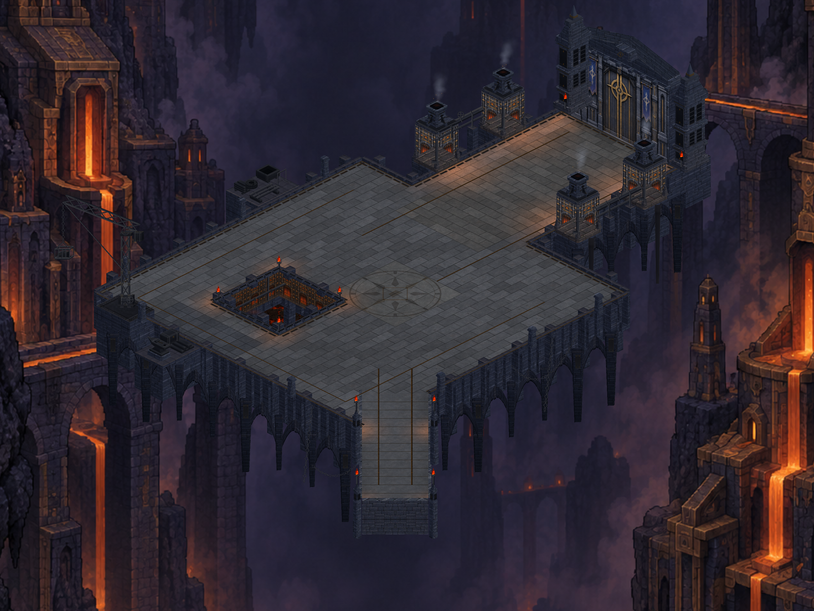

CRYPTFORGE / 29 EYLÜL 2026
Dökümhane servis paketi
Soğutma teknesi, metal stokları ve rulolar; şaft kenarı metal kanalları ve zincir bağlantıları; yapı diplerinde gölge ve köprüde meşale ışığı. Birleşik paketin gerçek Unity görüntüleri.

17 statik çizim grubu · 54.840 köşe. Oynanabilir alan ve savaş kuralları korunmuştur. Bu görüntüler Editor doğrulamasıdır; yeni paketin telefon testi yapılmamıştır.
Üretim ve doğrulama notları